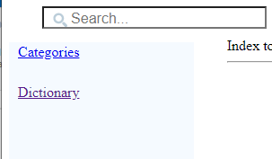
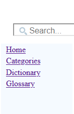
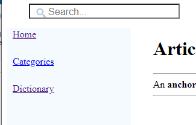
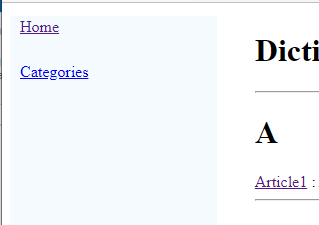
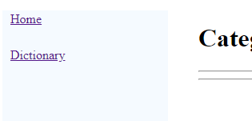

Home
Categories
Dictionary
Download
Project Details
Changes Log
What Links Here
How To
Syntax
FAQ
License
Default left menu
The default content of the left menu contains:
It is possible to show all the options regardless of the element, by setting the fixedLeftMenuOptions on the command-line or the configuration properties. For example, if we have on the command_line
On an article:
On the dictionary:
On the categories:
- For the "Home" article (the index): a link to the categories and the dictionary
- For the "Categories" : a link to the "Home" article and the dictionary
- For the "Dictionary" : a link to the "Home" article and the categories
- For any article: a link to the "Home" article, the categories, and the dictionary
- There is also a link to the glossary, if there is a glossary for the wiki
Structure of the menu
By default an option of the menu is not presented if we are on the associated article or element on which we are. For example, for the index, we will have:
It is possible to show all the options regardless of the element, by setting the fixedLeftMenuOptions on the command-line or the configuration properties. For example, if we have on the command_line
java -jar soft/docGenerator.jar -input=source -output=wiki -fixedLeftMenuOptions=true
We will have on the index page:
Examples
On the index:On an article:

On the dictionary:

On the categories:

See also
- Menus: It is possible to add a custom content to the left menu, and also add a custom right menu to the index file
- Custom left menu: It is possible to add custom items in the left menu, or even to completely change it
×

Categories: General